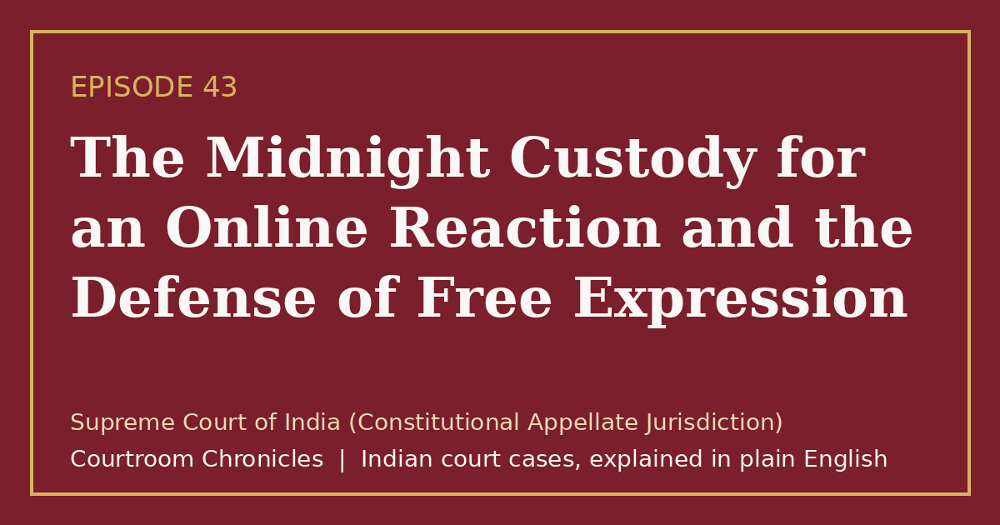

Episode 43
The Midnight Custody for an Online Reaction and the Defense of Free Expression
A landmark constitutional judgment struck down digital censorship provisions to shield online speech from arbitrary criminal prosecution.
Constitutional lawFreedom of speechInformation technologyCriminal procedureFundamental rights
#CourtroomChronicles#IndianLaw#FreeSpeech#CyberLaw#ConstitutionalLaw#DigitalRights#SupremeCourtOfIndia

Listen
- Court
- Supreme Court of India (Constitutional Appellate Jurisdiction)
- Date of Decision
- March 24, 2015
- Statutory Provision Challenged
- Section 66A of the Information Technology Act, 2000
- Nature of Online Conduct
- Posting and endorsing peaceful political commentary and satirical expression on social networks
- Constitutional Bench
- Two-judge bench of the Supreme Court of India
Key takeaways
- Online communication enjoys identical constitutional free speech protections as traditional print and spoken expression.
- Vague statutory definitions of criminality are unconstitutional because they invite arbitrary police overreach and selective enforcement.
- Digital platforms cannot be compelled to remove lawful user content without formal judicial directives or authorized governmental notices.
The case in brief
When two young women were arrested late at night for publishing and liking a peaceful social media observation questioning a citywide shutdown, the incident ignited nationwide public outcry over digital speech suppression. Police forces across various states had increasingly deployed statutory cyber provisions criminalizing offensive electronic communications to imprison political cartoonists, university academics, and ordinary citizens expressing lawful dissent.
A series of public interest writ petitions challenged the statutory penal provision before the Supreme Court as an unconstitutional infringement upon fundamental freedoms. The petitioners argued that nebulous statutory phrases criminalizing annoying, grossly offensive, or menacing communications lacked precise definitions, creating an intolerable chilling effect that suppressed legitimate democratic discourse without satisfying constitutional speech restrictions.
The Supreme Court declared the penal digital communications provision unconstitutional in its entirety under constitutional free speech guarantees. The bench held that the statute failed the doctrine of vagueness and overbreadth by impermissibly criminalizing advocacy and peaceful discussion without requiring any direct incitement to public disorder, while reading down intermediary liability rules to mandate judicial or governmental orders for online content takedowns.
Timeline
- Statutory Enactment
Parliament passes legislative amendments inserting broad digital speech penalties into information technology statutes.
- Suburban Arrests
Two citizens are taken into midnight criminal custody for posting and liking commentary on social media.
- Constitutional Challenge
Public interest writ petitions are filed before the Supreme Court challenging the constitutional validity of digital speech penalties.
- Landmark Verdict
The Supreme Court invalidates digital speech penal provisions and clarifies safe harbor rules for internet intermediaries.
- Judicial Enforcement Directive
The Supreme Court directs all states and police authorities to immediately withdraw pending prosecutions under the invalidated statute.
What the court decided
Writ petitions allowed in part; Section 66A of the Information Technology Act, 2000 struck down in its entirety as unconstitutional under Article 19(1)(a) and not saved by Article 19(2); Section 79(3)(b) read down to require court orders or government notices for intermediary content removal.
Key holdings
- Section 66A arbitrarily infringes the fundamental right to freedom of speech and expression and fails to satisfy any reasonable restriction criteria enumerated under Article 19(2).
- A clear legal distinction must be maintained between mere discussion, robust advocacy, and criminal incitement, with the law penalizing only the latter.
- The challenged provision suffers from incurable vagueness and overbreadth, failing to establish clear standards for citizens or law enforcement officers.
- Intermediary liability safe harbor provisions require an official court order or designated government directive before an online platform is obliged to remove content.
Legal principles
Doctrine of Vagueness and Overbreadth
A penal statute that defines crimes in terms so indefinite that people of common intelligence must guess at its meaning violates the fundamental guarantee of due process.
In this case: The court held that terms like offensive, annoyance, and inconvenience provided zero objective statutory boundaries, allowing subjective and arbitrary criminal enforcement.
Discussion Versus Incitement Distinction
Advocacy of an unpopular cause or robust discussion remains constitutionally protected until it reaches the critical threshold of inciting imminent lawless action.
In this case: The court ruled that peaceful digital expression could not be criminalized merely because public officials or individuals found the underlying ideas offensive or irritating.
Chilling Effect on Fundamental Liberties
Overly broad penal enactments cause citizens to self-censor lawful speech out of fear of wrongful criminal prosecution, eroding core democratic participation.
In this case: The bench recognized that the sweeping penal reach of the cyber provision cast a wide net over lawful electronic expression, creating widespread public self-censorship.
The law then and now
While the substantive constitutional review evaluated the Information Technology Act, 2000 alongside penal provisions of the Indian Penal Code, 1860, modern criminal procedures regarding digital offenses now interface with the Bharatiya Nyaya Sanhita, 2023 and the Bharatiya Nagarik Suraksha Sanhita, 2023.
Left: the law applied to this case. Right: the matching provision today (the new criminal codes apply only to offences on or after 1 July 2024).
- Information Technology Act, 2000Section 66APunishment for sending offensive messages through communication service, etc.Information Technology Act, 2000Section 66A (Unconstitutional)Void ab initio under Supreme Court Judgment
Struck down in its entirety as unconstitutional under Article 19(1)(a) with subsequent directives barring registration of fresh cases.
Re-enacted with modernized terminology governing false electronic statements inciting public offenses or communal disorder.
Retained procedural safeguards requiring prior supervisory sanction before arresting individuals for minor offenses punishable by under three years.